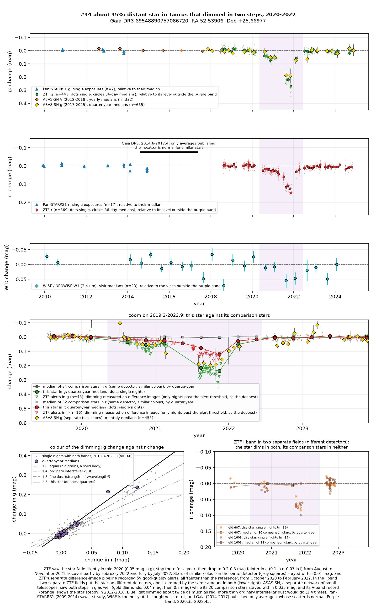
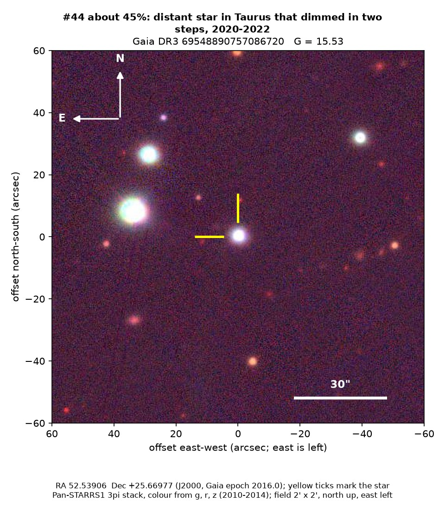
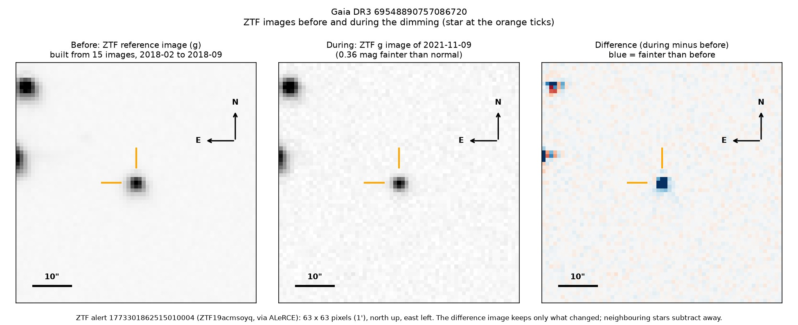

Professor of Mathematics
Paata Ivanisvili
Department of Mathematics, University of California, Irvine

Candidate 44: a distant star that dimmed in two steps
Why this estimate. The dimming is certain: ZTF recorded it on two of its detectors, and ASAS-SN, a separate network of small telescopes, saw both steps and the recovery while nearby stars stayed steady. Green light dimmed more than twice as much as red, the steepest ratio among many such dimmings checked, which fits very fine dust. The estimate is held down by the lack of a spectrum and by two disagreeing distances.
How to read the pictures. The finder chart shows a patch of sky two arcminutes across, about a fifteenth of the Moon’s width, with north up and east to the left. The star sits between the two yellow ticks, and the white bar is 30 arcseconds long. On a light curve the vertical axis is magnitude, a brightness scale on which larger numbers mean fainter stars, and it is drawn so that down means fainter. Purple shading marks the dimming. Each survey uses slightly different filters, so each is compared with its own normal level. The ZTF pictures show ZTF’s reference image of the star, an image taken during the dimming, and the difference between the two, in which only what changed remains: blue means fainter and red brighter.

What changed. The star is a yellow star of about 5,900 K that has begun to swell, seen through more dust than maps give for its line of sight, in Taurus about 4 degrees from the Pleiades (which are much closer and unrelated). ZTF saw it steady until spring 2020. By July 2020 it was 0.04 magnitudes fainter in green light, and it stayed slightly faint until spring 2021. From August to November 2021 it was 0.21 to 0.29 magnitudes fainter in green light, losing about 24 per cent of it at the deepest, in November. In February and March 2022 it was back at the first step’s level, and from July 2022 it was normal. ZTF’s alert system flagged it 59 times, every time fainter than the reference. ASAS-SN saw the same two steps and recovery, and its older record shows the star steady from 2012 to 2018.
Why it might matter. Blue light dimmed about 2.3 times as much as red light, and near-infrared light least. A solid body passing in front would dim all colours equally, ordinary interstellar dust gives 1.4 and starspots about 1.1 to 1.3, so a steeper ratio points to a cloud of very fine dust crossing the line of sight. A hot companion star that faded could also take away more blue light, but it would have to be hotter than about 11,000 K, and GALEX saw too little ultraviolet light for that. Dust clouds in front of ordinary, mature stars are rare, which is why such cases are worth following up.
No record of the dimming could be found. The star is not in SIMBAD, VSX (the variable-star index), Gaia’s variable-star lists or the other catalogues consulted, nor among the dimming stars of Tzanidakis et al. (2025), and there is no Transient Name Server entry, Gaia alert or paper giving its Gaia number. ZTF’s alert system holds only machine-generated classifications for it.
- Star
- Gaia DR3 69548890757086720, a yellow star beginning to swell into a subgiant
- Location
- RA 52.53906°, Dec +25.66977° (J2000), in Taurus, 25 degrees below the Milky Way’s mid-plane
- Distance
- uncertain: 1,800 parsecs from Gaia’s model of its spectrum, about 4,000 from its parallax
- Brightness
- Gaia G = 15.5, far too faint for the eye
- Probability
- This candidate is unconfirmed. The percentage under the title is an estimate of the chance that it is a real, previously unrecorded case of the kind described. The estimate has not been checked by outside experts. See the introduction to all fifty-eight candidates.
- Caveat
- Only ZTF measured the colour, the infrared measurements are too noisy to help, and TESS cannot separate the star from a brighter neighbour 35 arcseconds away. Several stars in the same part of the sky were faint in late 2021, but ASAS-SN, which shares no equipment with ZTF, saw this dimming too. There is no spectrum, and the two distances disagree.

